数据范围：CANESM5；完整样本国家与站点；SSP126/245/585；相对损失率采用能量加权口径。图表来自三个 RQ4 分析目录。
全球单位发电损失率按年份汇总如下。实线为年度值，虚线为 SSP 内全部年度的一阶线性趋势。风电中 SSP245 的整体水平最低，而 SSP126 与 SSP585 接近；光伏中 SSP585 明显较低。事件构成图同时展示全部事件和剔除 low_resource 后的事件占比。
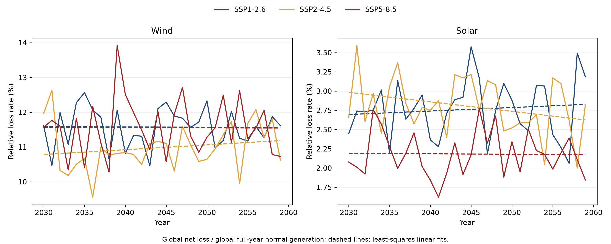
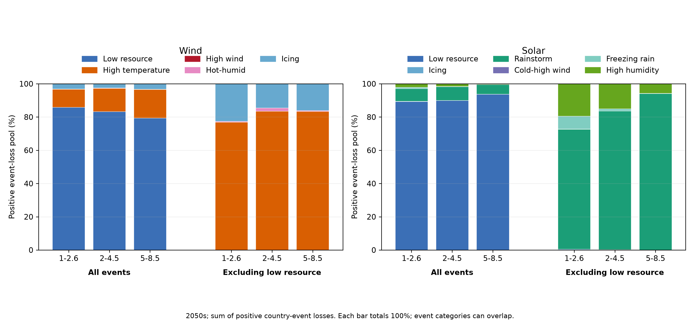
为解释 SSP 排序，单位发电损失率按下式分解：R = (事件小时 / 正常发电量) × (净损失电量 / 事件小时)。第一项是事件暴露尺度，第二项是事件小时池中的净损失强度；装机容量不作为独立项进入分解。瀑布图以 SSP126 为基准，分别显示 SSP245 和 SSP585 的暴露、强度贡献，且两项贡献之和严格等于目标 SSP 与基准的损失率差异。
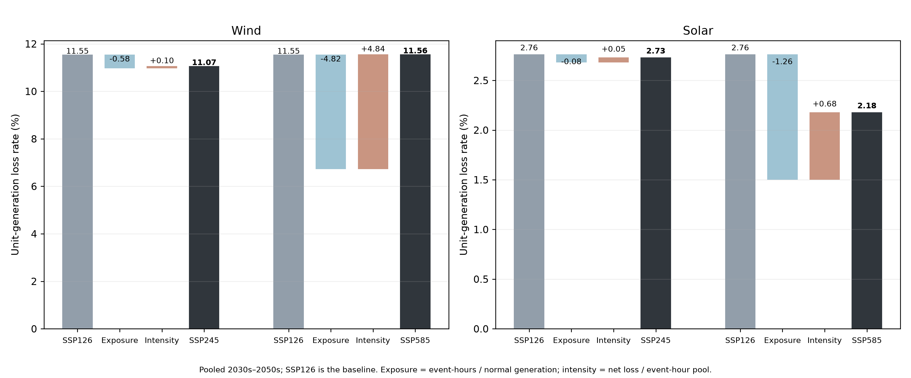
在 2030s–2050s 合并口径下，风电 SSP245 相比 SSP126 的暴露项下降约 0.58 个百分点，强度项增加约 0.10 个百分点，净效应为 −0.48 个百分点；SSP585 的暴露项下降约 4.82 个百分点，但强度项增加约 4.84 个百分点，二者几乎抵消，因此 SSP585 与 SSP126 接近。光伏 SSP585 的暴露项下降约 1.26 个百分点，强度项增加约 0.68 个百分点，最终损失率下降约 0.58 个百分点。由此可见，SSP 间的相对大小由事件暴露变化与单次事件强度变化共同决定，不能仅根据排放情景高低推断。
分解明细见 global_ssp_mechanism_factors_all_snapshots.csv 与 global_ssp_waterfall_decomposition_all_snapshots.csv。事件小时池来自纬度带事件频次表，事件类别可能重叠，因此强度项应理解为事件小时池的综合净损失强度。
风电形成两个清晰群体：Cluster 1 相对损失率约 16%–19%，Cluster 2 约 8%–10%。两组的情景响应并不单调：Cluster 1 在 SSP126 下整体偏高，Cluster 2 在 SSP585、尤其 2040 年前后部分年份升高，提示极端事件组合随情景发生交叉。事件机制上，高损失组以低资源和高温为主（SSP585 高温贡献接近 24%）；低损失组总体较低，但冰冻贡献可达约 8%。
光伏中德国单独成类，约 3.4%–5.7%；其他国家约 2.0%–2.8%。德国以低资源、冻雨、高湿和暴雨共同构成损失，其他国家更接近低资源—暴雨型。德国应视为异常/特殊类型，而非具有普遍代表性的国家群。
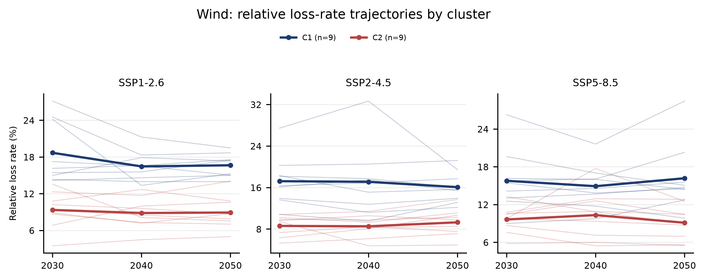
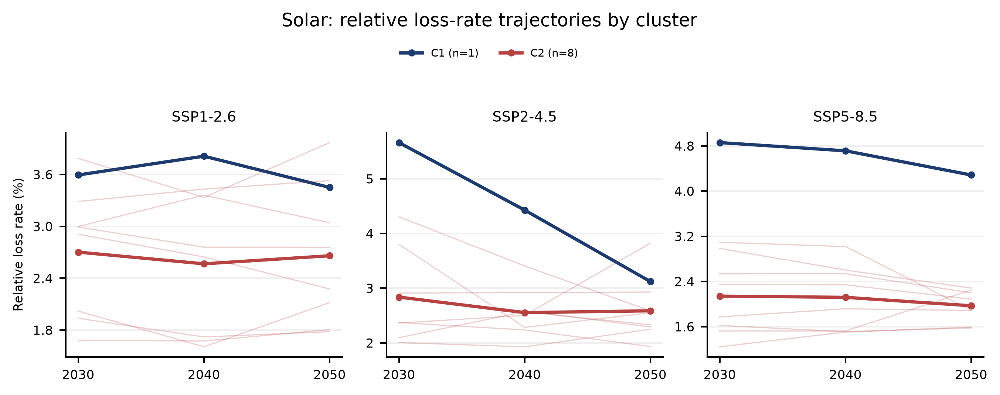
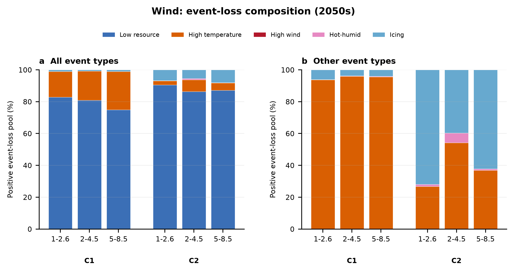
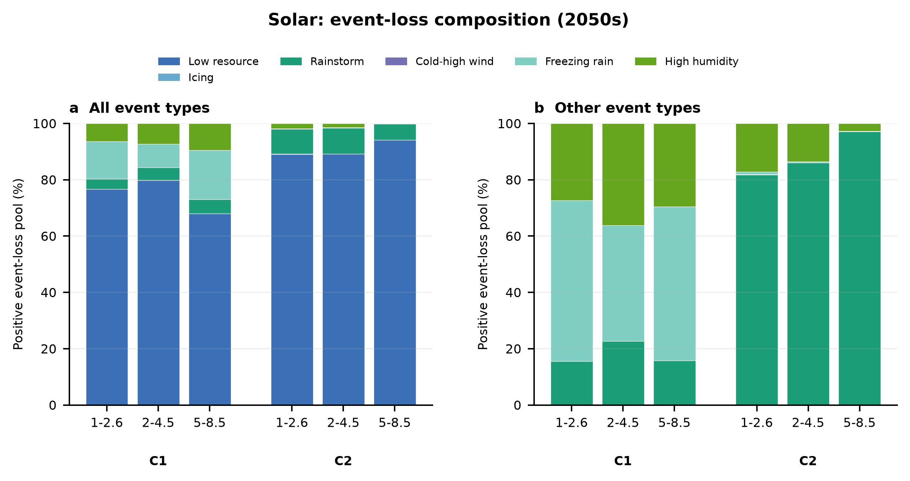
风电纬度梯度稳定为负：每升高 10°，损失率约下降 0.2–0.4 个百分点，2050 年代多数情景梯度变陡；光伏梯度为正但较弱且随年代减弱。因此风电“低纬更脆弱”、光伏“高纬更脆弱”，存在纬度方向的技术互补。
事件呈清晰纬度分工：高纬以 icing/freezing rain 为主，低纬风电以 high temperature 为主，低纬光伏以 rainstorm 为主；low_resource 在各带仍占 76%–98%。南半球同纬度风电通常高于北半球。带间差异（约 3–7 pp）明显大于年代际变化（多在 ±1.3 pp），但 S-high 样本很小，应谨慎解读。
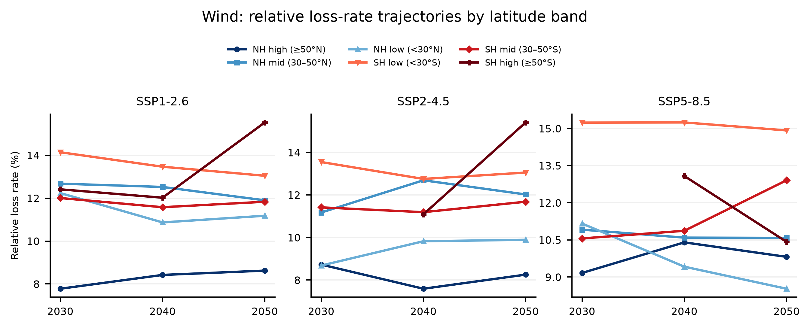
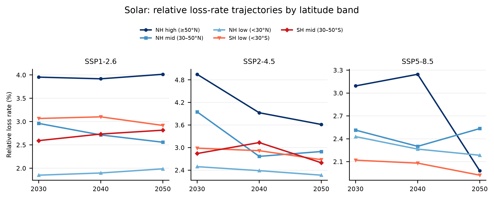
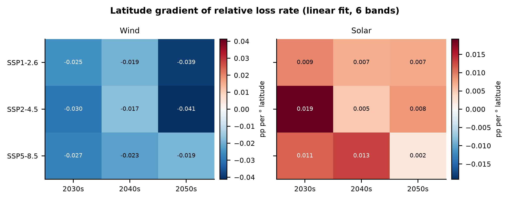
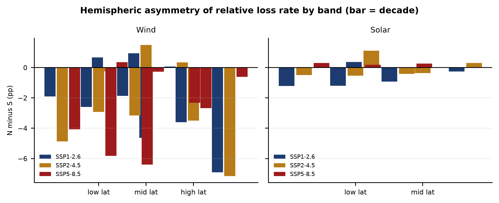
风电经度带极差约 2.8–8.5 pp，与纬度方向同量级；SSP126/245 最高风险带多为 120–060W，SSP585 转为 120–180E。光伏经度极差仅 0.6–1.8 pp，说明对经度不敏感。
风电情景响应在经度方向分裂更强：060–120E 在 SSP585 比 SSP126 高约 2.77 pp，而 120–060W 低约 6.63 pp；光伏五个带均下降。经度带事件谱较均质（风电主要 low_resource/high_temp，光伏 rainstorm/high_humidity），带间差异更多来自同类事件的频率与强度。多数经度带由单一国家主导，除 000–060E 风电外应按国家级现象理解。
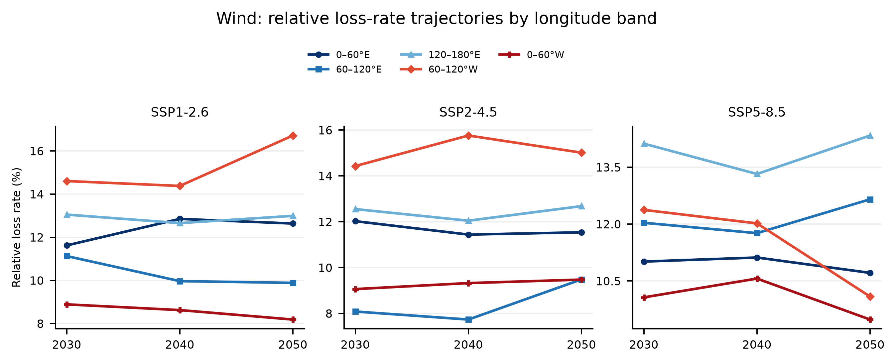
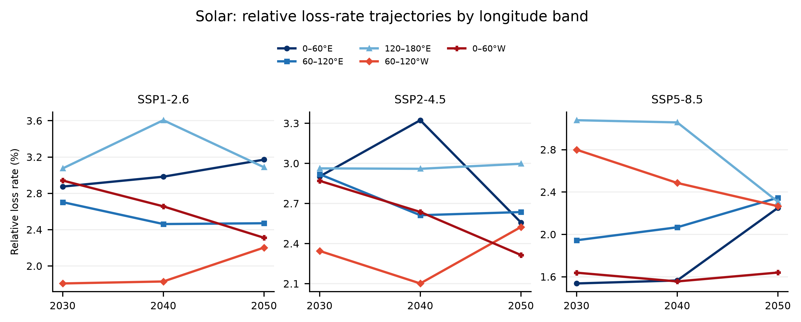
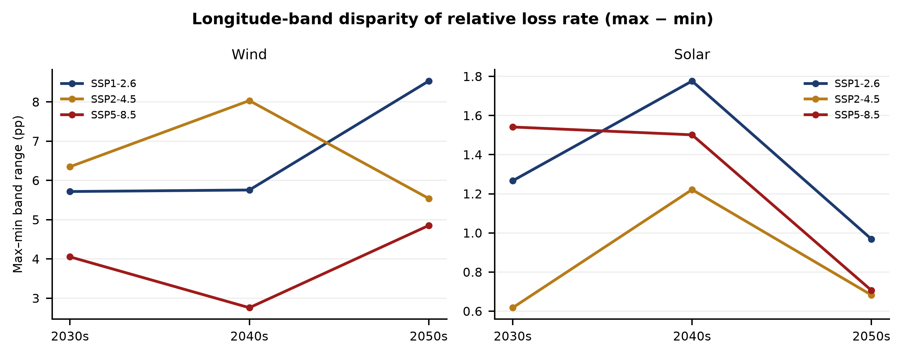
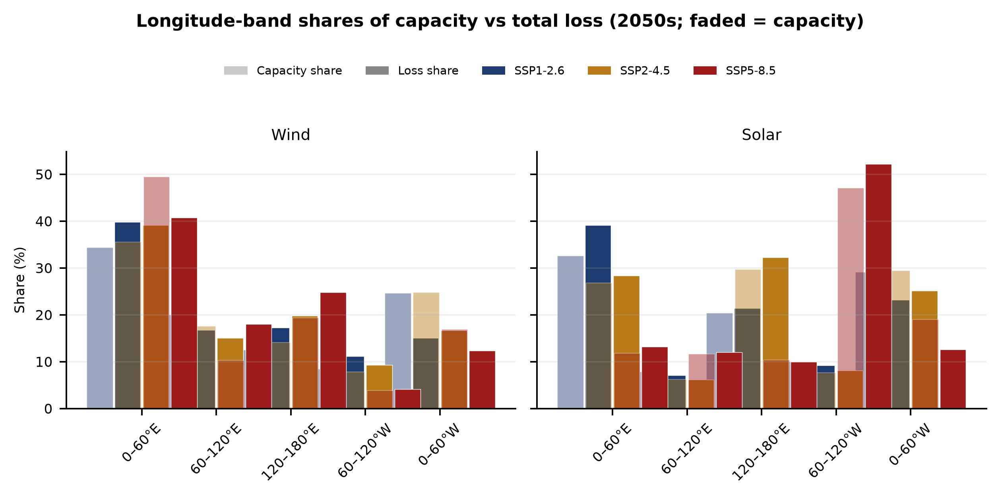
纬度是主要机制轴：国家聚类的事件组成与纬度带高度对应，高损失风电国家更常落在低纬高温/低资源环境，光伏异常国家德国位于北半球高纬并呈寒冷湿润事件特征。纬度梯度方向在两种技术上相反，解释了聚类中技术差异。
经度是区域调制轴：同一纬度气候带内，不同陆块的风电损失仍可相差数个百分点；经度带的情景跨度甚至达到 −40% 至 +28%，表明区域天气系统、海陆分布和装机规模会调制国家聚类的水平与情景响应。经度带与国家高度重合，因此不能把经度效应独立解释为普遍规律。
联合解释建议：用“国家聚类 × 纬度带 × 经度带”三维交叉定位风险单元，再用装机规模区分单位脆弱性与全球损失贡献。优先关注风电低纬且装机大的 S-low/000–060E，以及单位风险高但规模较小的 120–060W；光伏重点关注高纬寒冷湿润区与澳洲东部深度低资源事件。
结论基于单一气候模式和当前完整样本；部分带由单一国家或少量站点主导。风电上游能量字段存在临时 ×0.1 修正，已不影响相对损失率与占比，但绝对 MWh 结果在上游修复后需重跑。